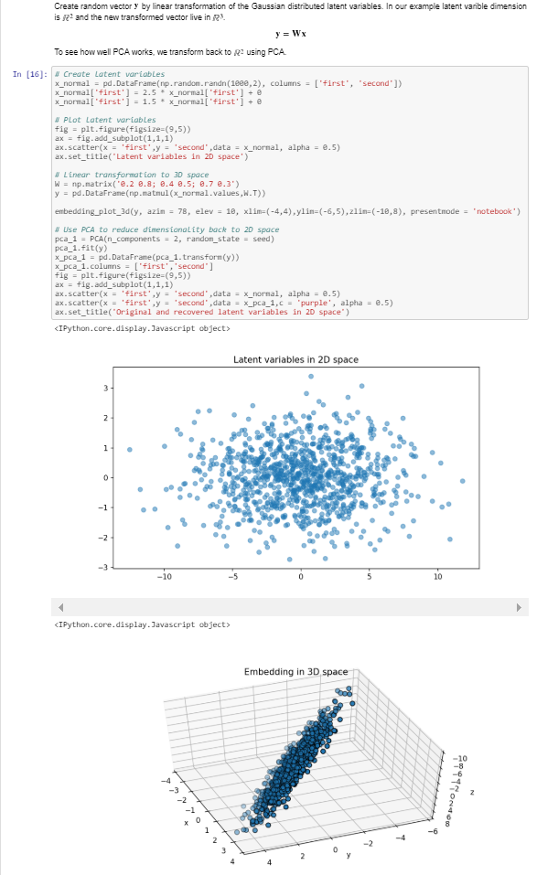

Python and R with
Jupyter Notebooks
Ville Voutilainen*
* Views expressed are those of the presenter.
Presentation tested to work in Chrome.
In this presentation
- What are Jupyter Notebooks?
- Why data analysis in notebooks?
- Employ both Python and R (together or separately) in notebooks.
“Code is never just code. It's part of a thought process, an argument, even an experiment.”
What is Jupyter? by O'reily.
“A Jupyter notebook is an excellent means of capturing code, text, widgets, graphics, and other rich media in a computational narrative that distills data into insights.”
IBM Emerging Technologies blog.
Field of knowledge discovery
How do notebooks help?
- KDD: Text, equations, code and graphs in one place.
- EDA: Play around with data in contained code cells.
- Info viz: Produce interactive/static plots and render them in-place.
- Share work in browsers - universal access.

Example of a notebook.
Notebooks, Python, and R as part of Anaconda installation
- Anaconda is a popular data science platform for Python and R.
- It comes pre-installed with over 1000 data packages, e.g. Jupyter notebooks, RStudio etc.
- Python and R are run within virtual environments.
- Packages and environments are managed with conda, Anaconda's packages manager.
R or Python?
- Similar tools, however with specific strengths and weaknesses.
- Python: Strong on being multi-purpose language.
- R: Strong on statistical techniques.
- Often reasons to use both!
Examples
Let's walk through a few examples:
- Python: Explore the iris dataset.
- R: Self-Organizing Map on student admission data.
- Combined: Example how to use Python and R in same kernel.
Summary
- Notebooks: create dynamic narratives out of your data.
- Very useful for exploratory data analysis.
- Can be used within teams to share results.
- R or Python? Why not both?